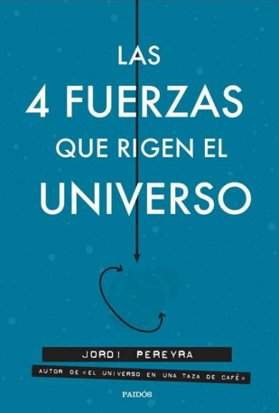
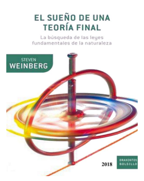
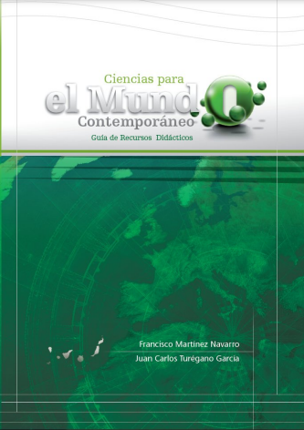

Bienvenido/a al espacio de física de Quantum. Explora y aprende.
La Astronomía es una disciplina científica que se dedica al estudio de los objetos celestes, como estrellas, planetas, galaxias y otros cuerpos celestes. Esta ciencia busca comprender el universo, su origen, evolución y funcionamiento, utilizando observaciones y teorías físicas.
En Quantum, valoramos la Astronomía como una de las ciencias más antiguas y fascinantes. La exploración del espacio y la comprensión de los fenómenos astronómicos son fundamentales para nuestra comprensión del cosmos.



Categoría: Astronomía
Creador:
Francisco Martínez Navarro
Juan Carlos Turégano García
Astronomiaweb es un canal creado por Juanjo, con este canal te enterar´s de noticias sobre la astronomía en general.